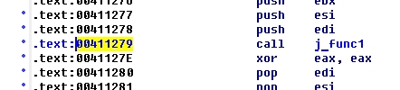
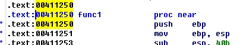

Данный проект разрабатывался на С++ для Visual Studio, в настройках проекта было указано Linker->General->Enable Incremental Linking->Yes
Что бы положительное число преобразовать в отрицательное или отрицательное число преобразовать в положительное небходимо выполнить следующие шаги:
Как выполнить операцию NOT - можно запустить кулькулятор Windows, перейти в режим Программист и нажать кнопку Not. Или другой способ. К примеру есть отрицательное шестнадцатеричное число FE 4A. Отнимаем FF FF - FE 4A (то есть инвертируем) получается 0x1B5, добавляем 1 и будет 0x1B6 - это и будет положительнео число которое соответсвтвует отрицательному FE 4A.
Отрицательные числа в ассемблере представляются при помощи операции, которая называется "дополнение до двух". К примеру у нас есть ассемблерный код в IDA, который вызывет функцию func1 и как видим у инструкции call адрес 0x00411279:
В hex виде это выглядит как E8 4A FE FF FF:
Где E8 это код инструкции call, а FE 4A само смещение на которое надо перейти. Причем как видим смещение отрицательное - в старшем разряде F, а это значит старший разряд двоичного числа содержит единицу- признак отрицательного числа.
И вот куда мы переходим по инструкции call, на адрес 0x004110C8:
Теперь давайте возьмем адрес после инструкции call, это будет 0x0041127E. Отнимем от этого значения адрес куда мы должны перейти 0x004110C8. Для простоты возьмем так:
0x27E - 0x0C8 = 1B6
Получилось число 0x1B6 в шестнадцатеричном виде. Теперь проверим наши расчеты. Инструкция call в шестнадцатеричном виде выглядит E8 4A FE FF FF, где E8 это сама инструкция а FE 4A отрицательные смещение куда надо перейти (как понятно отрицательное смещение). Переведем это отрицательное число в обычный вид, в положительное число, используя дополнение до двух, для этого требуется запустить калькулятор Windows и перейти в режим Программист.
Положтельные числа переводятся в отрицательные таким же методом - дополнения до двух. К примеру нам нужно получить минус 1, т.е. -1:
То есть в ассемблере смещение отсчитывается от адреса после инструкции call или jmp. Например продолжим с нашей функцией func1.
В шестнадцатеричном окне IDA E9 обозначает саму инструкцию jmp, смещение для jmp равно 0x183 (положительное смещение), т.е. это выглядит так:
И вот куда мы должны перейти, на адрес 0x00411250:
Следующая инструкция после jmp имеет адрес 0x004110CD, возьмем калькулятор Windows и отнимем ее от адреса куда мы должны перейти 0x00411250, т.е.:
0x250 - 0x0CD = 0x183
Таким образом инструкции call или jmp отсчитывают свое смещение перехода начиная от адреса следующей за ними инструкции.